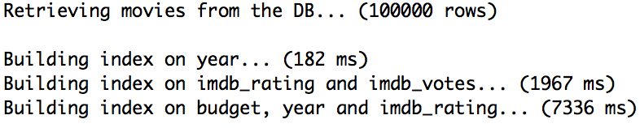
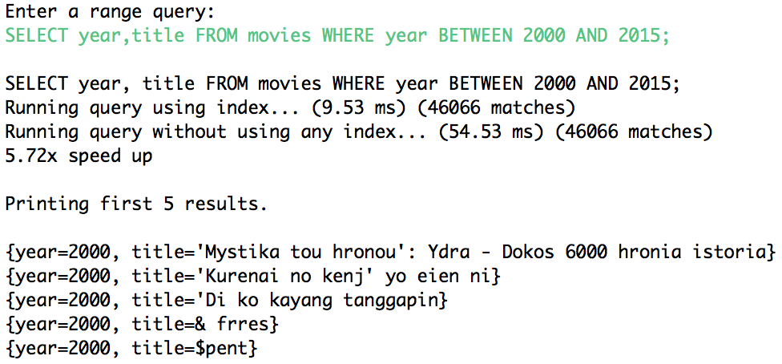
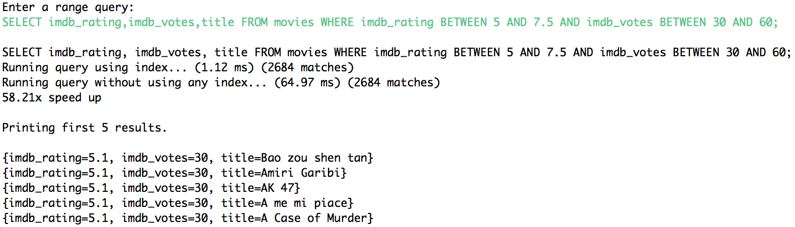
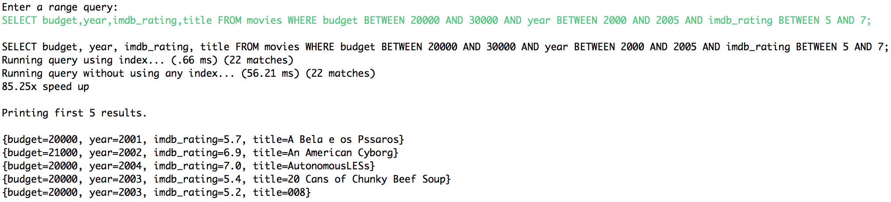
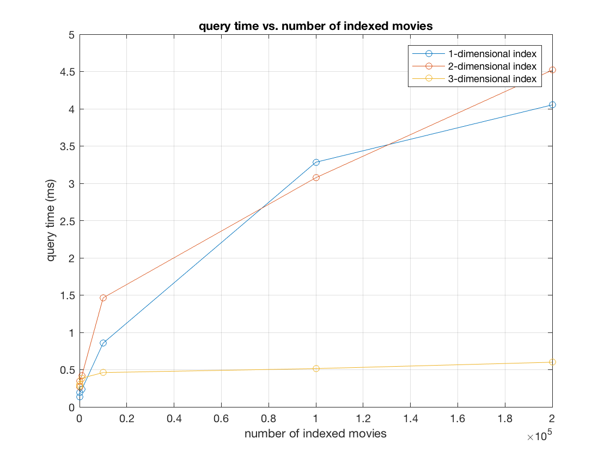

My goal for this project was to get an understanding of how databases solve range queries efficiently by using space partitioning structures.
Database queries typically include constraints over the attributes of the tuples to be retrieved. We might want that one or more attributes be equal to a certain value, or have a more relaxed query where some attributes lie within a certain range. A naive approach to solve such queries would be to scan all the tuples and check that all attributes are within the desired range. This would result in an algorithm of time complexity O(n*a), where n is the total number of tuples, and a is the number of attributes over which we are applying a constraint. However, we can consider the problem of solving a database query as a geometric one, where the constrained attributes constitute an n-dimensional space, and each tuple is a point in such space. Therefore, we can leverage theories of range searching to solve the query faster.
Given a SQL range query including constraints on up to 3 fields, use a space partitioning structure to index and retrieve all elements satisfying the query.
For example, for the following query involving range constraints on the fields rating and votes, we would like to report all movies lying within the red bounding box.
SELECT * FROM movies WHERE rating BETWEEN 7 AND 8 AND votes BETWEEN 30 AND 60;
We store the movies in a SQLite database. During initialization, the query engine will retrieve the movies in the database and build indexes. In particular, we build three indexes: a 1-D index on the year field, a 2-D index on the imdb_rating and imdb_votes fields, and a 3-D index on the budget, year and imdb_rating fields.
After the indexes have been built, the user is prompted to submit a range query. When the user enters a query, the query is parsed using ANTLR4 in conjunction with a SQLite grammar to build an in-memory representation of the query. Then, the query engine attempts to find a matching index based on the fields in the query.
The last step involves using the selected index to answer the query. The query is also answered performing a full-scan of the data to check that the number of movies returned by the index is correct and compare running times.
Below are the outputs when running three different queries with one, two and three constrained fields. We can notice how, as the number of fields increase, the speed up gained by using and index is considerably higher. In particular, the query is answered 5.72 times faster using an index for one constrained field; 58.21 times faster for two constrained fields, and 82.25 times faster for three constrained fields.
Query on one constrained field
Query on two constrained fields
Query on three constrained fields
Below are the query times for different numbers of movies using indexes of 1, 2 and 3 dimensions. At first sight, it might be shocking that the 3-dimensional index is consistently taking less time to answer queries when its complexity is superior. Recall, however, that the time complexity not only depends on the number of points n, but also on the number of reported points k. The one-dimensional index reported 46,000 movies on average, the two-dimensional index 2,700, and the three-dimensional index 20. Therefore, we can see that the three-dimensional index is reporting a considerably smaller number of movies and taking less time to answer the query in spite of the higher order logarithmic factor. The 1- and 2-dimensional indexes are taking similar times but the 1-dimensional is reporting many more movies.
